Projects
Selected research in wireless communications and signal processing, grouped by topic.
Dense-Array Channel Estimation
Observation design: from ice filling to 2D ice filling
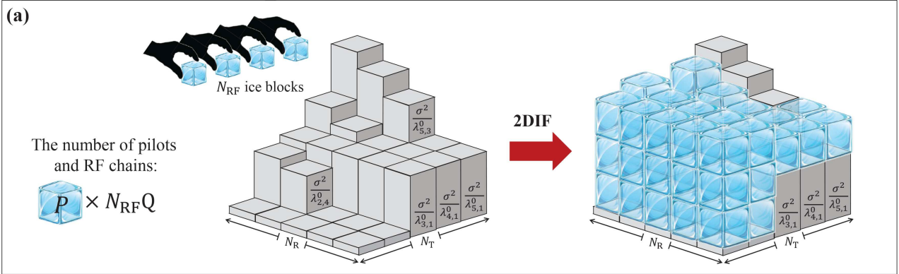
In dense antenna arrays, spatial correlation can be exploited directly in pilot and observation design when training overhead is tightly constrained. We introduce ice filling as a discrete counterpart to classical water filling and extend it to two-dimensional ice filling and hybrid arrays for joint transmit-precoder and receive-combiner design. For passive and active RIS-aided links, we further develop alternating Riemannian optimization and joint observation matrix design—paired with adaptive covariance estimation from received pilots—to co-design combiners and surface responses.
Selected publications
Observation Matrix Design for Densifying MIMO Channel Estimation via 2D Ice Filling IEEE Transactions on Signal Processing, vol. 74, pp. 798–814, 2026.
IEEE citationZ. Zhang and M. Cui, “Observation matrix design for densifying MIMO channel estimation via 2D ice filling,” IEEE Trans. Signal Process., vol. 74, pp. 798–814, 2026, doi: 10.1109/tsp.2026.3657342.
Ice-Filling: Near-Optimal Channel Estimation for Dense Array Systems IEEE Transactions on Wireless Communications, vol. 24, no. 10, pp. 8551–8564, Oct. 2025.
IEEE citationM. Cui, Z. Zhang, L. Dai, and K. Huang, “Ice-filling: Near-optimal channel estimation for dense array systems,” IEEE Trans. Wireless Commun., vol. 24, no. 10, pp. 8551–8564, Oct. 2025, doi: 10.1109/twc.2025.3567797.
Enhancing Channel Estimation in RIS-Aided Systems via Observation Matrix Design IEEE Transactions on Vehicular Technology, vol. 75, no. 10, pp. 25198–25203, Oct. 2026.
IEEE citationZ. Zhang and M. Cui, “Enhancing channel estimation in RIS-aided systems via observation matrix design,” IEEE Trans. Veh. Technol., vol. 75, no. 10, pp. 25198–25203, Oct. 2026, doi: 10.1109/tvt.2026.3697200.
Fluid Antenna Systems
Successive Bayesian reconstruction of spatially continuous channels
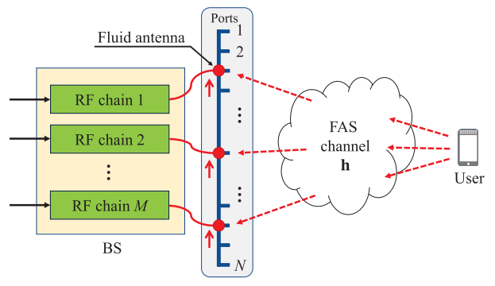
Acquiring channel state information across dense candidate ports in a fluid antenna system (FAS) incurs prohibitive pilot overhead if ports are probed exhaustively. Our successive Bayesian reconstructor (S-BAR) models the spatial channel as a stochastic process and leverages an experiential kernel to adaptively select probing ports and infer unobserved port channels, without assuming angular sparsity or slow channel variations.
Selected publications
Successive Bayesian Reconstructor for Channel Estimation in Fluid Antenna Systems IEEE Transactions on Wireless Communications, vol. 24, no. 3, pp. 1992–2006, Mar. 2025.
IEEE citationZ. Zhang, J. Zhu, L. Dai, and R. W. Heath, Jr., “Successive Bayesian reconstructor for channel estimation in fluid antenna systems,” IEEE Trans. Wireless Commun., vol. 24, no. 3, pp. 1992–2006, Mar. 2025, doi: 10.1109/twc.2024.3515135.
Near-Field XL-MIMO
Low-overhead beam training: hierarchical search and Bayesian inference
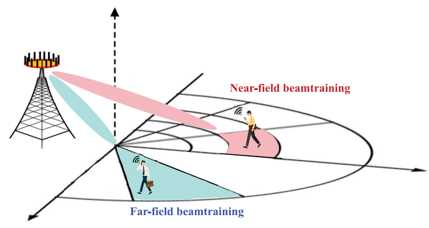
Because near-field beams depend on both angle and distance, exhaustive two-dimensional codebook sweeps become impractical for extremely large-scale arrays. We first design multi-resolution hierarchical codebooks via the Gerchberg–Saxton algorithm, adapted directly to hybrid precoding architectures without extra time-delay hardware. Moving from codebook search to statistical inference, we then formulate a Bayesian regression framework that exploits codeword correlations via Gaussian process posteriors to pinpoint the optimal beam from far fewer pilot measurements.
Selected publications
Near-Optimal Near-Field Beam Training: From Searching to Inference IEEE Transactions on Wireless Communications, vol. 24, no. 11, pp. 9173–9185, Nov. 2025.
IEEE citationZ. Xu, Z. Zhang, and L. Dai, “Near-optimal near-field beam training: From searching to inference,” IEEE Trans. Wireless Commun., vol. 24, no. 11, pp. 9173–9185, Nov. 2025, doi: 10.1109/twc.2025.3571488.
Hierarchical Beam Training for Extremely Large-Scale MIMO: From Far-Field to Near-Field IEEE Transactions on Communications, vol. 72, no. 4, pp. 2247–2259, Apr. 2024.
IEEE citationY. Lu, Z. Zhang, and L. Dai, “Hierarchical beam training for extremely large-scale MIMO: From far-field to near-field,” IEEE Trans. Commun., vol. 72, no. 4, pp. 2247–2259, Apr. 2024, doi: 10.1109/tcomm.2023.3344600.
Holographic and Continuous-Aperture MIMO
Pattern-division multiplexing for continuous-aperture MIMO
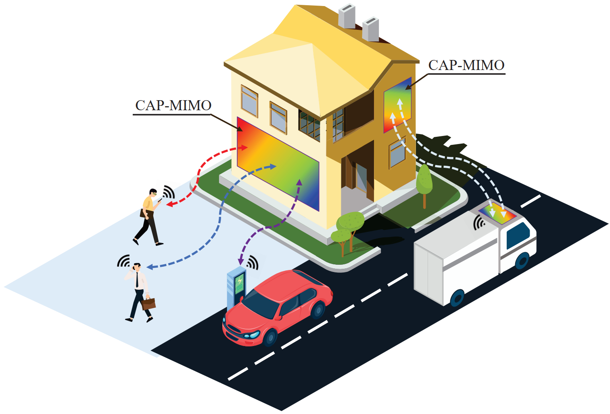
In continuous-aperture MIMO (CAP-MIMO), transmit waveforms take the form of continuous current distributions rather than discrete vectors. Pattern-division multiplexing (PDM) expands these current functions onto finite orthogonal bases, reducing the infinite-dimensional functional design to a tractable finite-dimensional optimization solved via block coordinate descent to maximize the multi-user sum rate.
Electromagnetic information theory and wavenumber-domain processing
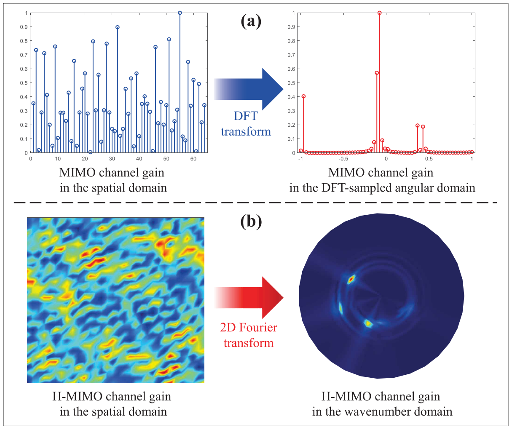
Accurate modeling of spatially continuous apertures requires accounting for electromagnetic wave physics and subwavelength spatial correlations. Using a random-field formulation, we characterize the mutual information between continuous transmit and receive regions under both white and colored noise. Complementing this theory, our wavenumber-domain tutorial applies a spatial Fourier plane-wave decomposition to unify multiplexing, channel estimation, and waveform design for holographic MIMO, while outlining open challenges for wideband and network-level deployments.
Selected publications
Pattern-Division Multiplexing for Multi-User Continuous-Aperture MIMO IEEE Journal on Selected Areas in Communications, vol. 41, no. 8, pp. 2350–2366, Aug. 2023.
IEEE citationZ. Zhang and L. Dai, “Pattern-division multiplexing for multi-user continuous-aperture MIMO,” IEEE J. Sel. Areas Commun., vol. 41, no. 8, pp. 2350–2366, Aug. 2023, doi: 10.1109/jsac.2023.3288244.
Wavenumber-Domain Signal Processing for Holographic MIMO: Foundations, Methods, and Future Directions IEEE Communications Standards Magazine, vol. 10, no. 2, pp. 127–133, Jun. 2026.
IEEE citationZ. Zhang and L. Dai, “Wavenumber-domain signal processing for holographic MIMO: Foundations, methods, and future directions,” IEEE Commun. Standards Mag., vol. 10, no. 2, pp. 127–133, Jun. 2026, doi: 10.1109/mcomstd.2026.3663934.
Mutual Information for Electromagnetic Information Theory Based on Random Fields IEEE Transactions on Communications, vol. 71, no. 4, pp. 1982–1996, Apr. 2023.
IEEE citationZ. Wan, J. Zhu, Z. Zhang, L. Dai, and C.-B. Chae, “Mutual information for electromagnetic information theory based on random fields,” IEEE Trans. Commun., vol. 71, no. 4, pp. 1982–1996, Apr. 2023, doi: 10.1109/tcomm.2023.3247725.
Reconfigurable Intelligent Surfaces
RIS-aided cell-free networks and multi-hop transmissions
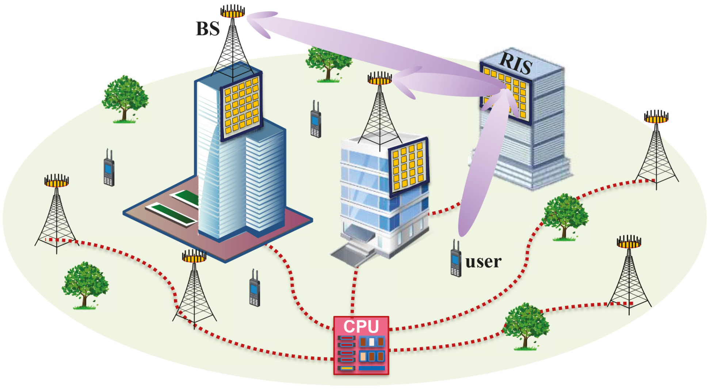
Combining distributed base stations with low-cost reflecting surfaces offers a practical path to boosting cell-free network capacity. We develop a wideband joint precoding framework that coordinates base-station precoders and RIS phase shifts via fractional programming and alternating optimization, and extend this line of work to energy-efficiency fairness and multi-hop RIS-assisted transmissions.
Active RIS: signal modeling, architectures, and wideband beamforming
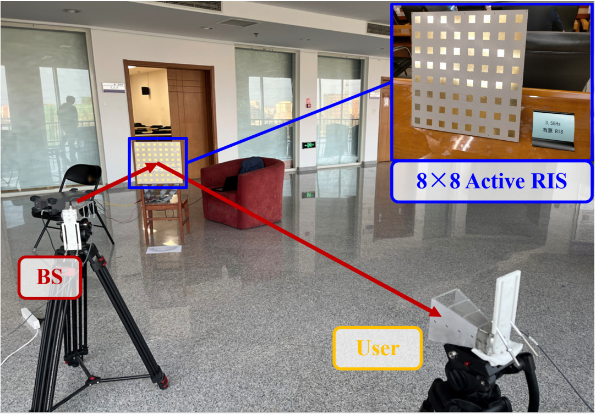
Passive RIS links suffer severely from multiplicative (“double”) fading, limiting their capacity gains whenever a non-negligible direct link exists. Active RISs overcome this bottleneck by integrating reflection-type amplifiers into the surface elements. Using a fabricated active-RIS element, we experimentally validate an amplification-and-noise signal model and jointly optimize base-station and reflection beamforming. Follow-up studies investigate energy-efficient sub-connected architectures with shared amplifiers, grouped-subcarrier beamforming for wideband channels, and fundamental open problems of RIS-aided 6G networks.
Compact user-specific RIS for uplink transmission
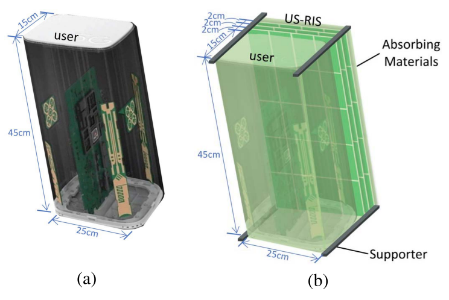
Tight size, cost, and power budgets make conventional large antenna arrays impractical on user terminals. We propose a compact multi-layer user-specific RIS (US-RIS) capable of phase and partial amplitude control at the transmitter, paired with an alternating optimization algorithm that maximizes the uplink signal-to-noise ratio.
Selected publications
A Joint Precoding Framework for Wideband Reconfigurable Intelligent Surface-Aided Cell-Free Network IEEE Transactions on Signal Processing, vol. 69, pp. 4085–4101, 2021.
IEEE citationZ. Zhang and L. Dai, “A joint precoding framework for wideband reconfigurable intelligent surface-aided cell-free network,” IEEE Trans. Signal Process., vol. 69, pp. 4085–4101, 2021, doi: 10.1109/tsp.2021.3088755.
Active RIS vs. Passive RIS: Which Will Prevail in 6G? IEEE Transactions on Communications, vol. 71, no. 3, pp. 1707–1725, Mar. 2023.
IEEE citationZ. Zhang et al., “Active RIS vs. passive RIS: Which will prevail in 6G?,” IEEE Trans. Commun., vol. 71, no. 3, pp. 1707–1725, Mar. 2023, doi: 10.1109/tcomm.2022.3231893.
Compact User-Specific Reconfigurable Intelligent Surfaces for Uplink Transmission IEEE Transactions on Communications, vol. 70, no. 1, pp. 680–692, Jan. 2022.
IEEE citationK. Liu, Z. Zhang, L. Dai, and L. Hanzo, “Compact user-specific reconfigurable intelligent surfaces for uplink transmission,” IEEE Trans. Commun., vol. 70, no. 1, pp. 680–692, Jan. 2022, doi: 10.1109/tcomm.2021.3124953.
Localization, Sensing, and Radio Maps
Signal-multiplexing ranging and asynchronous vehicle localization
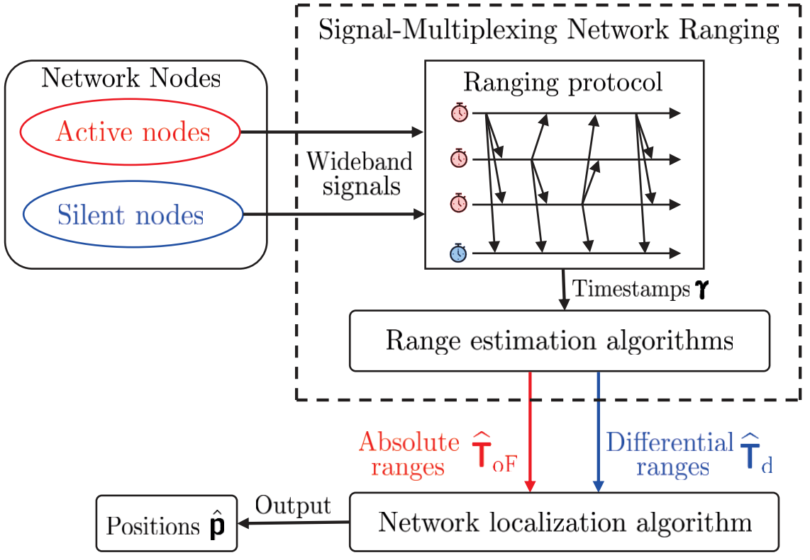
High-precision network ranging must compensate for clock offsets and drift without flooding the channel with pairwise packet exchanges. Signal-multiplexing network ranging reuses broadcast transmissions and inter-node timing differences to suppress clock errors with minimal signaling overhead. We further extend this scheme to exploit reflected non-line-of-sight paths for integrated localization and sensing, and to support timely relative positioning across asynchronous connected vehicles.
Urban 3D radio-map reconstruction from sparse UAV measurements
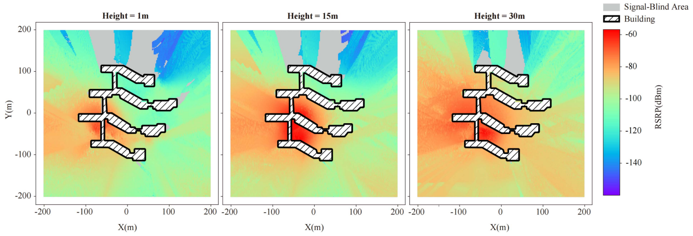
Constructing 3D urban radio maps is essential for UAV communications, yet dense aerial field measurements are expensive and time-consuming. Building on a real-world urban UAV measurement dataset, we design a Gaussian process regression framework that reconstructs 3D radio maps from sparse samples by combining offline clustering with posterior-guided online sampling.
Selected publications
Signal-Multiplexing Ranging for Network Localization IEEE Transactions on Wireless Communications, vol. 21, no. 3, pp. 1694–1709, Mar. 2022.
IEEE citationZ. Zhang, H. Zhao, J. Wang, and Y. Shen, “Signal-multiplexing ranging for network localization,” IEEE Trans. Wireless Commun., vol. 21, no. 3, pp. 1694–1709, Mar. 2022, doi: 10.1109/twc.2021.3106172.
Enhancing Timeliness in Asynchronous Vehicle Localization: A Signal-Multiplexing Network Measuring Approach IEEE Transactions on Intelligent Transportation Systems, vol. 25, no. 10, pp. 13729–13743, Oct. 2024.
IEEE citationH. Zhao, Z. Zhang, L. Xu, Y. Wang, and Y. Shen, “Enhancing timeliness in asynchronous vehicle localization: A signal-multiplexing network measuring approach,” IEEE Trans. Intell. Transp. Syst., vol. 25, no. 10, pp. 13729–13743, Oct. 2024, doi: 10.1109/tits.2024.3404784.
High-Efficiency Urban 3D Radio Map Estimation Based on Sparse Measurements IEEE Transactions on Vehicular Technology, vol. 74, no. 10, pp. 16488–16493, Oct. 2025.
IEEE citationX. Chen, X. Zhong, Z. Zhang, L. Dai, and S. Zhou, “High-efficiency urban 3D radio map estimation based on sparse measurements,” IEEE Trans. Veh. Technol., vol. 74, no. 10, pp. 16488–16493, Oct. 2025, doi: 10.1109/tvt.2025.3573595.
Rydberg Atomic Receivers
Atomic reception for wireless communication and sensing
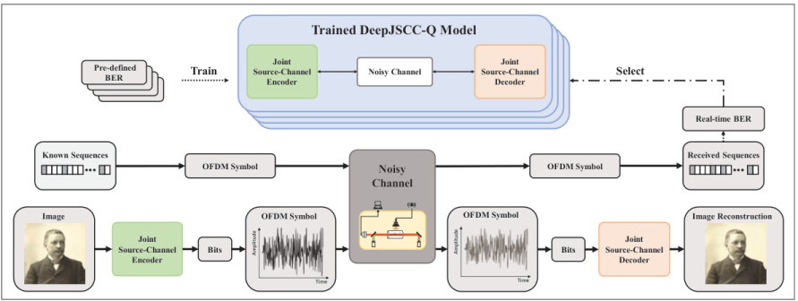
Rydberg atomic receivers sense radio-frequency fields via quantum atomic transitions rather than conventional RF front-ends. This collaborative magazine article surveys their physical principles and recent advances, demonstrates experimental OFDM reception and image transmission with quantized deep joint source-channel coding, and examines practical hardware constraints alongside prospects for multi-band sensing and net-zero 6G communications.
Selected publications
Rydberg Atomic Receivers for Net-Zero 6G Wireless Communication and Sensing: Progress, Experiments, and Sustainable Prospects IEEE Communications Magazine, vol. 64, no. 8, pp. 52–59, Aug. 2026.
IEEE citationY. Tao et al., “Rydberg atomic receivers for net-zero 6G wireless communication and sensing: Progress, experiments, and sustainable prospects,” IEEE Commun. Mag., vol. 64, no. 8, pp. 52–59, Aug. 2026, doi: 10.1109/mcom.001.2500610.